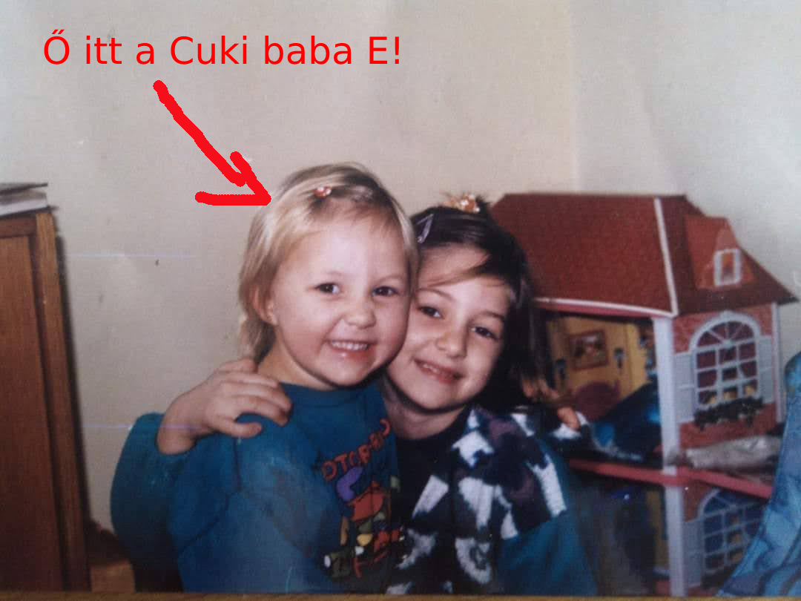
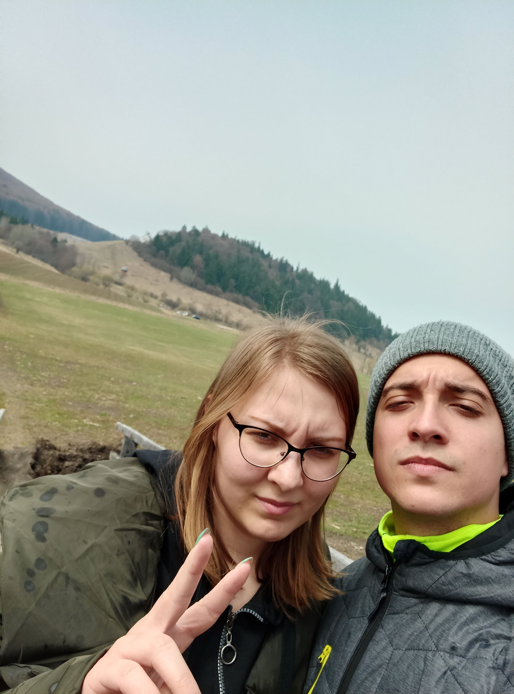
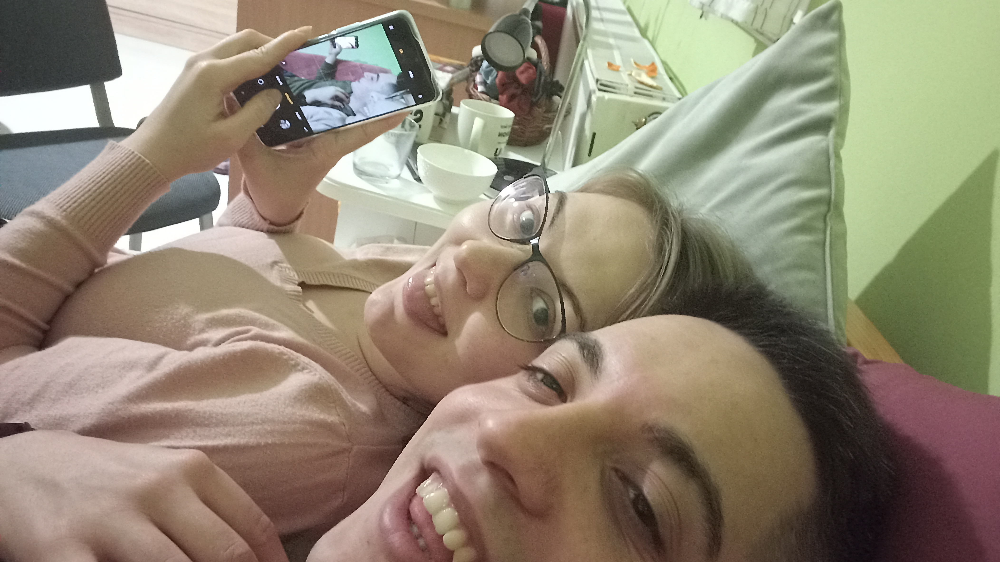
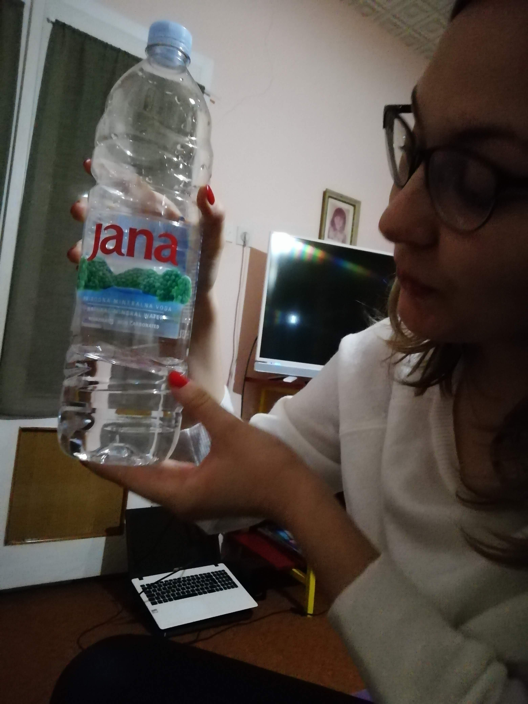
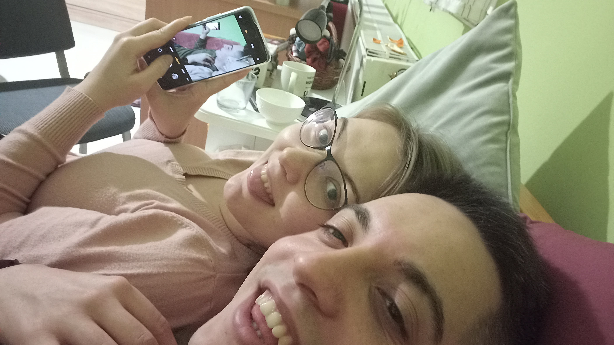
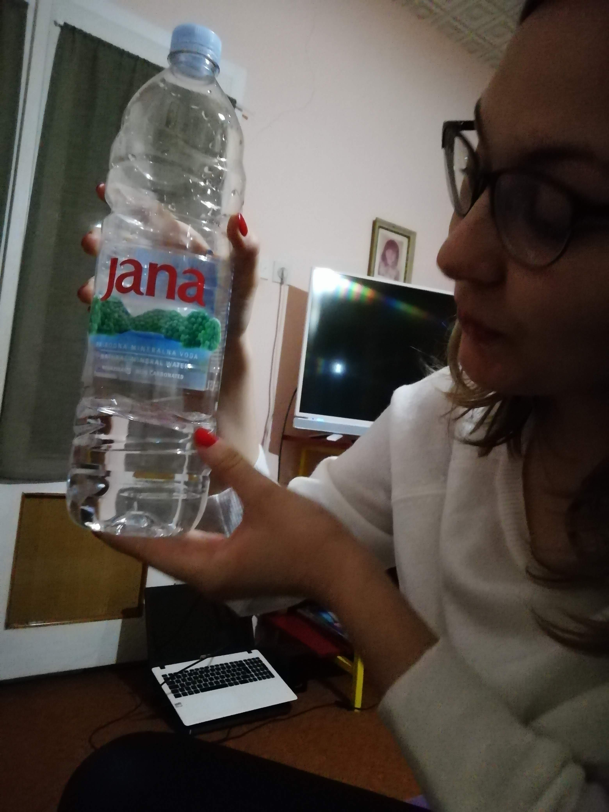

A kis Babócámmal már bejártuk a világot, de ha nem is, hát igyekszünk bejárni azt. Annyi helyre eljutottunk, mégis azt kell mondanom, hogy azok a helyek mások lettek volna nélküle! Ezért is örülök annyira, hogy ő van nekem!
Első Történet
Egyszer elmentünk valahova buliba, és megláttalak, és írtam, és vége. Nem!!! Sosincs vége!!!
Második sztori-mori:
A Totyi
Volt egyszer egy cukker-mukker, aki mindenhova bekukkantott és kikukkantott. Az ő neve nem volt más, mint Burány Ildikó. A kis csaj, aki azóta sem szűnt meg BABÁNAK lenni, járkált-márkált mindenfelé és az aranygombocska klikkereivel nézelődött a világban. Csodás dolgokat művelt az a kis csajszika, akit mindenki Popós Angyalkának hív. Feltolt a hegy tetejére egy óriási piros talicskát, máskor vízzel javított autót, megint máskor ment oszt játszott oszt ennyi. Sok feljegyzés maradt fel a kis Babócáról, hiszen azóta felcseperedett és nagyon aranyos és elviselhető, de tényleg. :PVégeHarmadik Sztorikácska
Don Quihote
Volt egyszer egy cukker-mukker, akibe valaki behavarodott. Nem tudom, hogy ki, de a személye lényegtelen. Na, elmentek ők ketten egy nagyon izgalmas helyre, ahol buliztak, társalogtak, próbáltak túlélni éjjelente, de végül győztek. Legyőzték a Malmot, és annak minden próbáját! Volt még ott egy amúgy még izgalmasabb hely, amiről nem sokan tudnak, de én, mint a modern idők krónikása, el kell, hogy áruljam, hogy mindig érdeklődjenek, hogy mik történnek a búzatarlókban késő augusztusban!Vége
Most jöhet a kedvenc sztorim...
Első és Egyetlen Történet
A Végtelen
A Babócához kapcsolódó történetekben leginkább azt szeretem, hogy mindig van benne valami új és mindig az az érzésem támad, hogy sosem ér véget. De nem csak időben van ez így, hanem helyben is (biztos a téridő kontinuitás miatt...).............Mindenhol is szeretve vagy egyetlenem, és ezt sose felejtsd el, akkor is, ha épp ott vagyok, és akkor is, ha épp nem. Hiszen a szívemmel, a lelkemmel, a testemmel és az eszemmel is vágyom rád. Ha kilépsz az ajtón, ott marad az illatod, ami emlékeztet rád... Ha elmész a cuki kis autóddal, még akkoris hallom az égi nevetésed...
És minden egyes távozásoddal sem hagysz el, mert az arcocskád ott marad a fejemben!
 És végezetül annyit mondhatok, hogy NEM ÉRDEKEL MIT MONDASZ, ez itt marad az interneton örökre, reméljük mi is így leszünk! Sosincs vége! :P
Ha elmész a cuki kis autóddal, még akkoris hallom az égi nevetésed...
És minden egyes távozásoddal sem hagysz el, mert az arcocskád ott marad a fejemben!
 És végezetül annyit mondhatok, hogy NEM ÉRDEKEL MIT MONDASZ, ez itt marad az interneton örökre, reméljük mi is így leszünk! Sosincs vége! :P